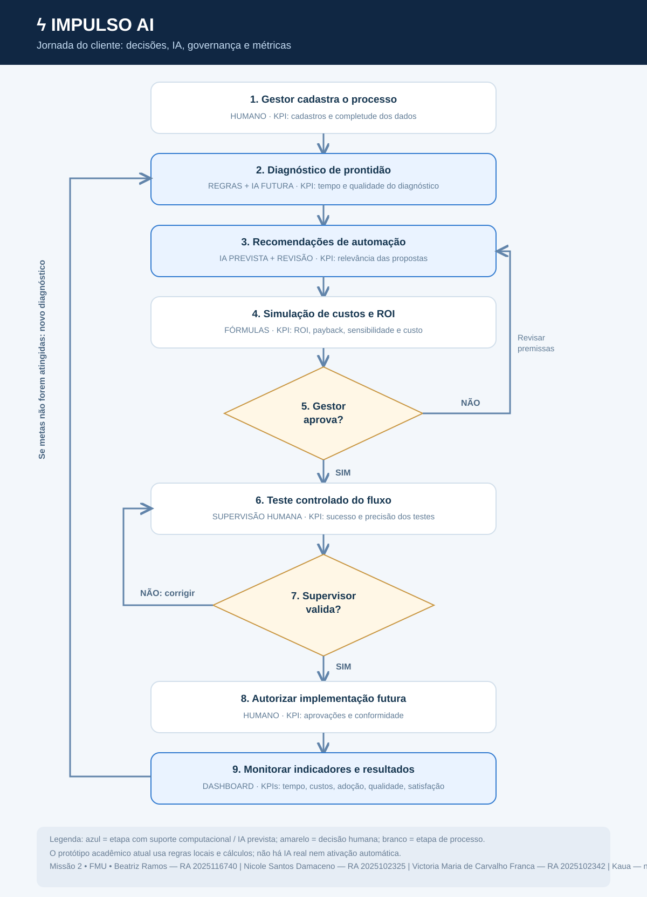

IMPULSO AI
Da intenção à implementação.
Pesquisa comparativa de seis empresas, MVP conceitual, análise econômica e jornada do usuário
Entrega: 11 de novembro de 2026
Repositório: github.com/biibiahh24/impulso-ai-fmu
1. Introdução e objetivos
Esta pesquisa analisa mudanças provocadas pela Inteligência Artificial (IA) nos modelos de negócio, nas rotinas de trabalho e na viabilidade econômica de diferentes aplicações. A comparação reúne seis empresas identificadas nos registros do AI Brasil Experience 2026, com o propósito de formular um MVP conceitual que responda a uma lacuna relevante de mercado.
Objetivo geral: avaliar aplicações, desafios, impactos profissionais e fatores econômicos de adoção de IA, propondo uma solução estratégica com hipótese de validação.
2. Metodologia e tratamento de evidências
O grupo utiliza entrevistas, vídeos, anotações e materiais coletados no evento e pesquisa pública complementar. As informações são categorizadas como (a) relato de representante, (b) material da empresa, (c) estudo externo ou (d) inferência técnica acadêmica. Onde faltam custos, indicadores ou prazos, registra-se “não informado”.
Os desafios atribuídos à Cilia e à Leavo AI nos materiais complementares são hipóteses técnicas plausíveis, não falas confirmadas das empresas. O fato de um caso ter ocorrido em uma organização não assegura que o mesmo retorno ocorrerá em outras.
3. Exploração comercial: seis casos
| Empresa | Aplicação de IA | Mudança setorial | Desafios e barreiras | Evidência predominante |
|---|---|---|---|---|
| WebGlobal / AiProtus | Robótica interativa com LLM personalizado | Atendimento presencial com automação e experiência personalizada | Logística física de instalação e adaptação | Entrevista / vídeo |
| Aditum | Agentes inteligentes para tarefas internas em tecnologia de pagamentos | Apoio a desenvolvimento e homologação | Adoção pelas equipes, capacitação, priorização e custo | Entrevista / vídeo |
| Digibee | Plataforma de integração com apoio de IA | Especificação, construção e monitoramento de integrações | Segurança, governança e integração (análise técnica e contexto do produto) | Entrevista + estudos públicos |
| Cilia | IA aplicada à orçamentação automotiva por imagens | Apoio à identificação de danos e orçamentos | Reconhecimento, precisão, diversidade de fotos, integração e validação humana* | Entrevista parcial + análise técnica |
| HugLabs | Pesquisa, classificação e consulta de documentos | Maior agilidade e autonomia na localização de informações | Adaptação aos dados e estruturas do cliente | Entrevista estruturada anotada |
| Leavo AI | Agentes para WhatsApp, CRM e processos comerciais | Resposta, qualificação, agendamento e acompanhamento | Integração, qualidade de dados, precisão, treinamento e privacidade* | Materiais de divulgação + análise técnica |
*Hipóteses técnicas plausíveis; não se tratam de desafios diretamente confirmados pela empresa.
4. Matriz comparativa econômico-operacional
| Empresa | Custos | Benefícios tangíveis | Benefícios intangíveis | Maturação | Barreira de entrada |
|---|---|---|---|---|---|
| AiProtus | Não informados | Potencial de automatizar interações | Experiência e inovação | Não informada | Equipamento e logística |
| Aditum | Não informados | Agilidade em processos de tecnologia | Aprendizagem e adaptação organizacional | Não informada | Treinamento e priorização |
| Digibee | Não informados | Rapidez de integrações em casos estudados | Autonomia de equipes | Estudo econômico 2022: payback inferior a seis meses | Complexidade e governança |
| Cilia | Referência pública de R$ 5.900 em contratação específica* | Potencial de acelerar orçamentos | Consistência operacional | Não informada | Qualidade de imagens e integrações |
| HugLabs | Não informados | Busca e classificação mais ágeis | Clareza dos dados e autonomia | Prazo de seis meses citado; natureza não determinada | Preparação de dados |
| Leavo AI | Plano divulgado desde R$ 397/mês* | Potencial de atendimento automatizado | Disponibilidade e consistência | Não informada | Integração, LGPD e confiança |
*Valores não equivalem ao custo geral de implantação. Referências econômicas públicas devem ser conferidas nas fontes originais antes da submissão.
5. ROI e habilidades demandadas
A fórmula de retorno sobre investimento é ROI = [(benefícios econômicos − investimento) ÷ investimento] × 100. A Digibee publicou estudo Forrester Total Economic Impact de 2022 que reporta 232% de ROI em organização composta modelada. Esse dado não equivale ao retorno médio de IA da Digibee e não pode ser extrapolado para as demais cinco empresas.
Nas entrevistas e registros restantes, não há dados financeiros completos de investimentos e benefícios que permitam calcular ROI efetivo. Portanto, seria inadequado inventar percentuais.
As aplicações observadas indicam demanda por programação e APIs, dados, segurança, privacidade, integração, avaliação financeira, gestão de mudanças, comunicação e supervisão de sistemas inteligentes. Essas competências representam análise transversal, não a reprodução de anúncios formais de vagas das seis organizações.
6. Problema e oportunidade: IMPULSO AI
Problema: pequenas e médias empresas podem não dispor de conhecimento e recursos para identificar aplicações viáveis de IA, integrar sistemas, preparar dados, capacitar profissionais e medir ganhos.
Oportunidade: oferecer uma jornada simples de diagnóstico, seleção de processos, análise econômica e acompanhamento, com controles de aprovação humana.
Público-alvo: gestores de PMEs de serviços, comércio e rotinas administrativas. Modelo: B2B SaaS com assinatura e implantação assistida opcional.
Proposta de valor: reduzir incerteza, apresentar justificativas compreensíveis e orientar investimentos antes de implementar automações reais.
7. Produto e aplicação da IA
- Diagnóstico: avaliar maturidade de processos, dados, equipes, segurança e integrações.
- Recomendação: usar IA generativa futuramente para interpretar descrições de processos e sugerir possibilidades, sempre com justificativas e revisão.
- Simulação: calcular custo, benefício, ROI e sensibilidade por fórmulas determinísticas, sem delegar as contas a uma LLM.
- Governança: exigir aprovação do gestor e validação do responsável técnico antes de qualquer integração operacional.
- Painel: acompanhar tempo, custo, qualidade e adoção após uma implantação real futura.
Representação: protótipo navegável em impulso-ai-fmu. Ele executa regras locais e cálculos, mas não tem modelos externos de IA, persistência de dados ou integração operacional.
8. Hipótese de validação e proposta de teste
Hipótese: um diagnóstico guiado permite que gestores de PMEs identifiquem oportunidades de automação com maior clareza e menor tempo do que a abordagem sem apoio.
Piloto projetado: cinco PMEs com processos repetitivos. Cada participante documentará um processo, utilizará a plataforma, examinará uma recomendação e registrará compreensão, utilidade percebida e tempo de análise. Metas propostas: redução de 30% no tempo e 80% de compreensão das recomendações.
Essas metas não constituem resultados obtidos. Um teste posterior deverá registrar dados antes e depois, feedback dos gestores, precisão e incidentes.
9. Viabilidade financeira hipotética
| Investimento inicial do fornecedor | Estimativa acadêmica |
|---|---|
| Design e prototipação | R$ 1.500 |
| Desenvolvimento | R$ 8.000 |
| IA e integrações futuras | R$ 2.000 |
| Testes, segurança e documentação | R$ 2.000 |
| Total | R$ 13.500 |
Operação estimada do fornecedor: R$ 1.200/mês, antes de detalhar tributos, vendas e custo variável por cliente.
Cenário do cliente (não observado)
10 funcionários × 15 minutos/dia × 22 dias úteis × R$ 30/hora = R$ 1.650/mês de capacidade econômica potencial, ou R$ 19.800/ano. Assinatura hipotética de R$ 600/mês mais implantação de R$ 1.800 = R$ 9.000 no ano 1.
ROI econômico potencial: (19.800 − 9.000)/9.000 × 100 = 120%; benefício líquido hipotético de R$ 10.800. Isso pressupõe aproveitamento econômico integral de todo o tempo liberado e ausência de custos adicionais para o cliente — hipótese forte e incerta.
Sem monetização do tempo economizado, o resultado poderá ser muito inferior ou negativo. Esse cálculo não demonstra economia de caixa nem receita realizada. O equilíbrio econômico do fornecedor também requer custos variáveis, impostos e recuperação do investimento inicial.
10. Jornada operacional e impactos no trabalho
O processo passa por cadastro, diagnóstico, recomendações, simulação de ROI, decisão do gestor, testes controlados, decisão do supervisor e monitoramento. A rejeição devolve o projeto à revisão. Os pontos de apoio de IA não substituem a aprovação humana.

Impactos esperados: tempo liberado para análise e atendimento mais qualificado; necessidade de habilidades digitais, de dados e de governança; atenção à resistência dos funcionários, erros de modelos, segurança e proteção de dados pessoais.
11. Conclusão
A análise das seis empresas aponta que a adoção de IA envolve decisões de negócio, pessoas, processos e indicadores econômicos além da tecnologia em si. O IMPULSO AI responde a essa lacuna ao organizar uma jornada de adoção com diagnóstico, priorização, cálculos auditáveis e supervisão humana.
O MVP é conceitual; seu valor e viabilidade deverão ser testados em pilotos. A documentação e a apresentação não devem tratar benefícios simulados como evidências reais.
12. Referências e anexos
Fontes primárias: registros de entrevistas, vídeos e anotações do grupo no AI Brasil Experience 2026, incluindo materiais de WebGlobal/AiProtus, Aditum, Digibee, Cilia, HugLabs e Leavo AI. Antes da entrega, relacionar os arquivos originais na pasta de evidências, respeitando autorização e dados pessoais.
Fontes públicas complementares: Digibee — Forrester TEI 2022; Leavo AI — site institucional. Dados secundários não confirmados, como contrato público da Cilia e valores comerciais, exigem conferência documental prévia.
Equipe: [INTEGRANTE 1 — NOME COMPLETO — RA] · [INTEGRANTE 2 — NOME COMPLETO — RA] · [INTEGRANTE 3 — NOME COMPLETO — RA].